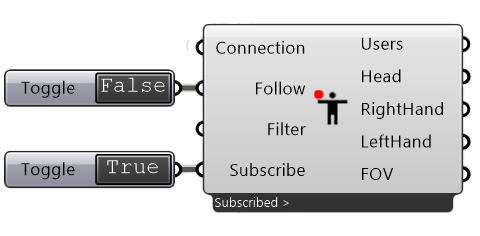

6. SubscribeUser¶
This component is used to subscribe to a number of values by a user such as head and hand position.
Input
Name |
Description |
Type |
|---|---|---|
Connection |
Link with the Connect component |
Connection |
Follow |
Follow a user (select in the menu) |
Boolean |
Filter |
Filter own publication/broadcast |
Boolean |
Subscribe |
Toggle the subscription |
Boolean |
Output
Name |
Description |
Type |
|---|---|---|
User |
User List |
Text |
Position |
Coordinates |
Point |
Forward |
Direction of View |
Vector |
Upward |
Direction upwards |
Vector |
FOV |
Field of View |
Number |
Right Position |
Right VR Position |
Point |
Right Forward |
Direction forward |
Vector |
Right Upward |
Direction upwards |
Vector |
Left Position |
Left VR Position |
Point |
Left Forward |
Direction forward |
Vector |
Left Upward |
Direction upwards |
Vector |
Menu
Users |
List of users to select |